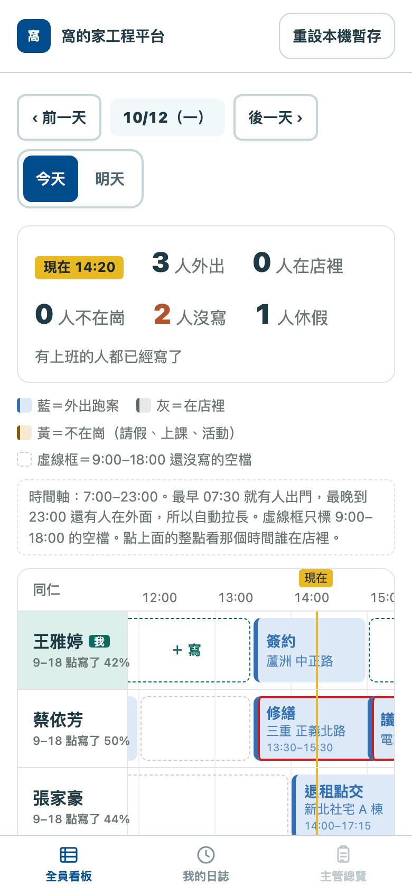
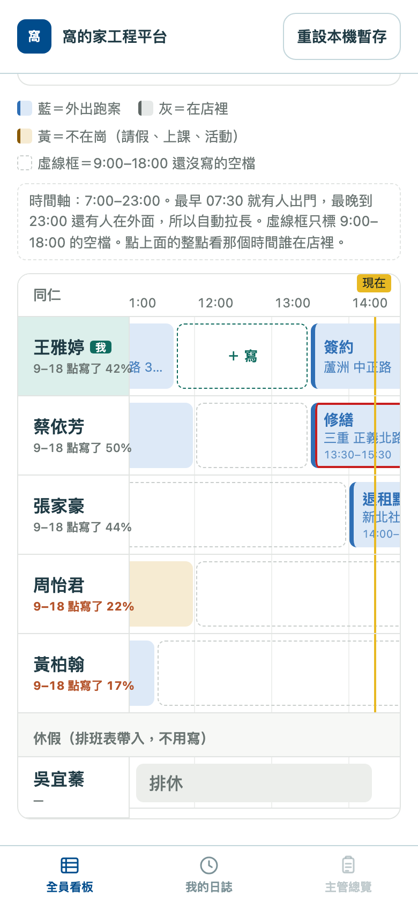
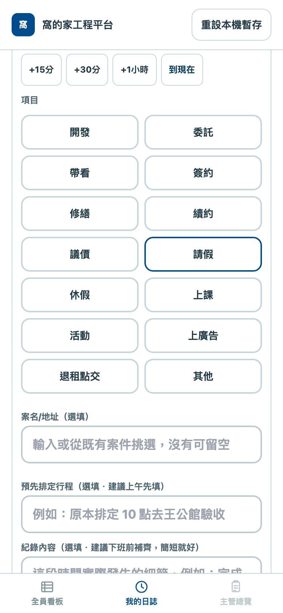

工作日誌看板｜同仁使用手冊
租賃部同仁用。手冊裡的名字和行程都是假的。
一句話：打開你的專屬連結，在看板上找到自己那一排（最上面、標著「我」），點虛線框「＋ 寫」，選時間和項目，按儲存。大家都看得到。
1. 打開
1
用管理者傳給你的專屬連結打開（LINE 裡那條，或 Ragic 上方「工作日誌」→「工作日誌_你的名字」）。
2
連結裡有你的身分，不要轉給別人。同一支手機打開一次後，下次直接開網址也認得你。
3
一打開就是全員看板。下方三個按鈕：全員看板／我的日誌／主管總覽（主管專用）。

2. 看懂看板
一排一個人，往右是時間。手機可以左右滑看其他時段，名字會固定在左邊。

| 看到 | 意思 |
|---|---|
| 藍色 | 外出跑案：開發、委託、帶看、簽約、修繕、續約、議價、退租點交 |
| 灰色 | 在店裡：上廣告、其他 |
| 黃色 | 不在崗：請假、休假、上課、活動 |
| 虛線框 | 9:00–18:00 之間還沒寫的空檔 |
| 紅框 | 你寫的兩段時間重疊了，回去檢查一下 |
| 黃色直線「現在」 | 目前時間 |
| 名字下「9–18 點寫了 X%」 | 你 9 點到 18 點填了多少；低於 40% 會變紅 |
| 最下面「休假」區 | 排班表上當天排休、特休、請假的人，不用寫 |
排序：自己永遠在最上面，其他人照「寫得多少」排，寫越多越上面。
3. 填寫（最常用）
1
在自己那一排，點虛線框裡的 「＋ 寫」。會自動跳到「我的日誌」，並幫你帶好那個時段（最多一小時）。
2
調整開始／結束時間（每 15 分鐘一格，旁邊有「+15分」「+1小時」「到現在」快速鍵）。
3
點一個項目；有案子就填案名或地址（例：三重 重新路 3 段）。
4
按「儲存這筆」。看到「已送出」才算存好。回「全員看板」就會看到自己那一排多了一塊。

早上排、晚上補：早上先把今天要去哪裡排上（填「預先排定行程」），下班前回來補「紀錄內容」，同一筆改就好，不用重開。
4. 其他常見問題
| 我想… | 怎麼做 |
|---|---|
| 先排明天 | 看板或我的日誌上方按「明天」，照樣點空格填 |
| 改已經存的那筆 | 到「我的日誌」點開那筆修改，再按儲存（看板上點自己的色塊也有「去改這一段」） |
| 改昨天的 | 不行。過去的日子只能看、不能改，所以當天記得補完 |
| 看別人寫什麼 | 點他那一排的色塊，會顯示時間、項目、案名。你只能改自己的 |
| 看某個時間誰在店裡 | 點看板最上面的整點（例如「14:00」），會列出「在店裡／不知道（沒寫）／走不開」 |
| 畫面說「少了專屬通行碼」 | 重新從 LINE 或 Ragic 選單點你的連結 |
| 畫面怪怪的 | 重新整理；還不行就跟主管說 |
送出後一定要看到「已送出」。沒看到就是沒存進去，畫面會留著紅色提示，網路好了再按一次。